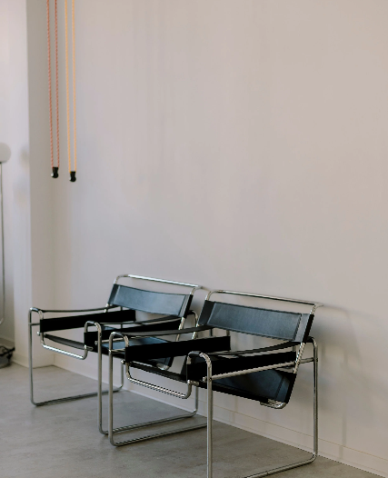

Empathie
Grundlage meiner Arbeit ist eine empathische und wertschätzende Haltung.
Mein Ansatz
Ich begleite Menschen, Teams und Gruppen dabei Konflikte zu lösen, neue Perspektiven einzunehmen und passende, individuelle Lösungen zu finden.
Dabei höre ich zu, frage nach, sortiere und schaffe Struktur, damit sich ein gemeinsamer Weg finden lässt und neue Ansätze sichtbar werden.

Grundlage meiner Arbeit ist eine empathische und wertschätzende Haltung.
Mein Ansatz ist geprägt von langjährigen Erfahrungen in verschiedenen Bereichen.
Teil der Arbeit ist es, Strukturen neu zu sortieren, aufzubrechen und neue zu schaffen.
Über mich
Aufgewachsen auf einem landwirtschaftlichen Betrieb haben mich Zusammenhalt, Verantwortung und Gemeinschaft von Beginn an geprägt. Meine Wurzeln und mein Studium der Agrarwissenschaften ebneten mir den beruflichen Weg, auf dem ich zunehmend Führungsverantwortung übernahm und Kommunikation in den Mittelpunkt rückte.
Mit der Ausbildung als Mediatorin und systemischer Coach konnte ich meine beruflichen und persönlichen Erfahrungen um fundiertes Wissen und methodische Kompetenzen erweitern und unterstütze nun mit viel Freude Menschen auf ihrem Weg.
01 / Mediation
Wenn unterschiedliche Interessen, Erwartungen oder Sichtweisen aufeinandertreffen hilft Mediation wieder miteinander ins Gespräch zu kommen.

02 / Systemisches Coaching
Wenn Veränderungen anstehen, Entscheidungen getroffen werden müssen oder persönliche und berufliche Herausforderungen zu bewältigen sind, hilft systemisches Coaching dabei, neue Perspektiven zu gewinnen und eigene Wege zu entwickeln.

FAQ
Mediation und Coaching biete ich sowohl online als auch vor Ort an. Gemeinsam können wir überlegen, welches Setting für Sie am besten geeignet ist.
Die einfachste und beste Kontaktmöglichkeit ist per E-Mail. Meine E-Mail-Adresse finden Sie im Bereich „Kontakt“.
Für mich sind am Anfang vor allem die groben Eckdaten relevant. Am besten schreiben Sie in der Kontaktaufnahme, ob Sie sich für Mediation oder systemisches Coaching interessieren, welche Tage und Zeiten sich für die gemeinsamen Termine eignen und eine grobe Umschreibung des Anliegens.
Der persönliche Leidensdruck kann unter Umständen sehr groß werden. Jedoch bin ich keine ausgebildete Psychotherapeutin und kann daher weder psychische Erkrankungen diagnostizieren noch behandeln. Falls die Themen meine Kompetenzen übersteigen sollten, können wir jedoch gemeinsam passende Unterstützungsmaßnahmen besprechen.
Kontakt
Sie möchten mehr erfahren oder einen Termin vereinbaren? Schreiben Sie mir gerne.
Ich freue mich auf Ihre Nachricht.
Lisa Verhaag
Pfarrer Pohl Straße 7
53123 Bonn
Deutschland
Tel.: +49 176 81024438
E-Mail: verhaag.mediation-coaching@web.de
Umsatzsteuerbefreit (Kleinunternehmerregelung)
Verantwortliche/r i.S.d. § 18 Abs. 2 MStV:
Lisa Verhaag, Pfarrer Pohl Str. 7, 53123 Bonn
Stand: 24.09.2026
Die Inhalte unserer Seiten wurden mit größter Sorgfalt erstellt. Für die Richtigkeit, Vollständigkeit und Aktualität der Inhalte können wir jedoch keine Gewähr übernehmen. Als Diensteanbieter sind wir für eigene Inhalte auf diesen Seiten verantwortlich. Wir sind als Diensteanbieter jedoch nicht verpflichtet, übermittelte oder gespeicherte fremde Informationen zu überwachen oder nach Umständen zu forschen, die auf eine rechtswidrige Tätigkeit hinweisen. Verpflichtungen zur Entfernung oder Sperrung der Nutzung von Informationen nach den allgemeinen Gesetzen bleiben hiervon unberührt. Eine diesbezügliche Haftung ist jedoch erst ab dem Zeitpunkt der Kenntnis einer konkreten Rechtsverletzung möglich. Bei Bekanntwerden von entsprechenden Rechtsverletzungen werden wir diese Inhalte umgehend entfernen.
Die durch die Seitenbetreiber erstellten Inhalte und Werke auf diesen Seiten unterliegen dem deutschen Urheberrecht. Die Vervielfältigung, Bearbeitung, Verbreitung und jede Art der Verwertung außerhalb der Grenzen des Urheberrechtes bedürfen der schriftlichen Zustimmung des jeweiligen Autors bzw. Erstellers. Downloads und Kopien dieser Seite sind nur für den privaten, nicht kommerziellen Gebrauch gestattet. Sollten Sie auf eine Urheberrechtsverletzung aufmerksam werden, bitten wir um einen entsprechenden Hinweis. Bei Bekanntwerden von Rechtsverletzungen werden wir diese Inhalte umgehend entfernen.